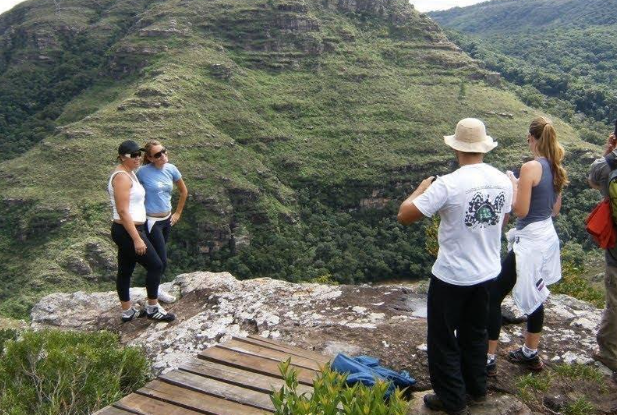
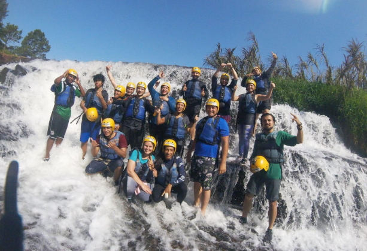
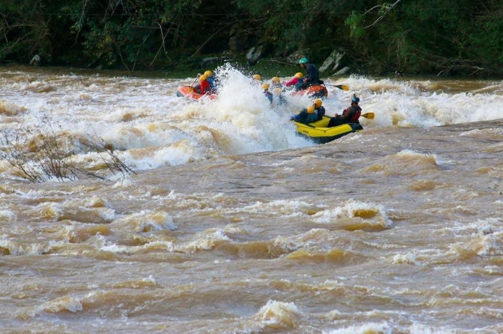

Detalhes do Roteiro
Início Sobre Nós Serviços Pacotes Atividades Contato Guartela Corporativo Venha Conhecer O Cânion Guartelá, localizado em Tibagi, Paraná, é uma excelente opção para empresas que buscam promover integração, motivação e trabalho em equipe entre seus colaboradores É um dos destinos mais incríveis para quem gosta de ecoturismo e aventura! Ele faz parte do Parque Estadual do Guartelá e é conhecido pelas suas formações rochosas impressionantes, pelas trilhas e pelo contato intenso com a natureza da região. É um canyon brasileiro situado no planalto dos Campos Gerais, entre os municípios de Castro e Tibagi, no Paraná. É considerado um dos maiores canyons do mundo, (6° maior do mundo, e o maior do Brasil) com 32 Km de comprimento e altitudes que variam de 700 a 1.200 m. Benefícios para empresa: Integração de Equipe: Atividades em grupo fortalecem o trabalho em equipe Motivação: Experiências diferenciadas aumentam o engajamento dos colaboradores Bem-estar: Contato com a natureza promove saúde mental e física Customização: Pacotes adaptáveis às necessidades específicas de cada empresa Serviços inclusos nesse pacote: Translado executivo com serviço de bordo Saída da empresa ou local a combinar Visita ao Canyon do Guartelá Rafting corporativo no Rio Tibagi Guias e condutores qualificados 1 completo almoço guartelano com suco natural Rapel Salto Puxa Nervo Cavalgada tropeira Visita a Cachoeira Puxa Nervo (com ingresso) Visita a Cachoeira Salto Santa Rosa; (com ingresso) Seguro atividades Fotos e filmagens Serviços não inclusos nesse pacote: Despesas extras em geral, que não estejam mencionadas no descritivo. Informações adicionais: Valores diferenciados para grupos acima de 15 funcionários;Saída de Curitiba ou outras cidades do Paraná;No roteiro temos opção de banhos de rios e cachoeiras, panelões e piscinas naturais;Passeio indicado e acessível a todas as idades;As atividades opcionais terão que ser decididas e contratadas antes da viagem;Vestes – calça ou bermuda para caminhada, roupas e toalha para banho de cachoeiras, caso tempo bom, agasalho e jaqueta caso esteja frio;Calçados – Calçado fechado, preferência calçado impermeável, sem preferência de marca, desde que se sinta se confortável ao caminhar em terrenos arenosos. Chinelos para melhor comodidade após os passeios e atividades;Alimentação – No passeio já estará incluído um almoço no restaurante da Pousada, as demais refeições podem ser adquiridas no roteiro ou levar lanches e petiscos de sua preferência para os passeios. Utilidades – Pequena mochila, repelente de insetos, bloqueador solar, Máquina fotográfica;
O Cânion Guartelá, localizado em Tibagi, Paraná, é uma excelente opção para empresas que buscam promover integração, motivação e trabalho em equipe entre seus colaboradores É um dos destinos mais incríveis para quem gosta de ecoturismo e aventura! Ele faz parte do Parque Estadual do Guartelá e é conhecido pelas suas formações rochosas impressionantes, pelas trilhas e pelo contato intenso com a natureza da região. É um canyon brasileiro situado no planalto dos Campos Gerais, entre os municípios de Castro e Tibagi, no Paraná. É considerado um dos maiores canyons do mundo, (6° maior do mundo, e o maior do Brasil) com 32 Km de comprimento e altitudes que variam de 700 a 1.200 m.
Galeria de Fotos


